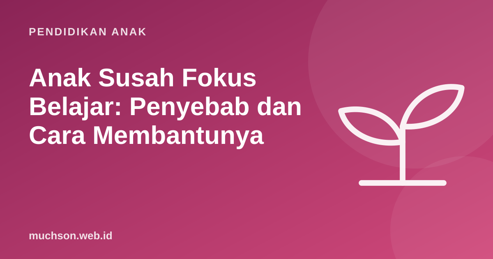

Beranda › Artikel › Pendidikan Anak
Pendidikan AnakAnak Susah Fokus Belajar: Penyebab dan Cara Membantunya
Duduk lima menit, lalu bangun mengambil minum. Kembali, lalu meraut pensil. Lalu bertanya hal lain. Orang tua yang mendampingi anak belajar pasti akrab dengan pemandangan ini. Kabar baiknya, kebanyakan masalah fokus punya penyebab yang bisa diperbaiki. Artikel ini membahas penyebab umum, strategi yang bisa langsung dicoba, dan kapan perlu konsultasi.

Fokus adalah kemampuan yang berkembang
Kemampuan memusatkan perhatian termasuk dalam fungsi eksekutif, yaitu kemampuan otak untuk merencanakan, mengingat instruksi, menahan dorongan, dan berpindah tugas. Menurut Center on the Developing Child di Harvard University, kemampuan ini tidak dibawa sejak lahir dalam bentuk jadi, tetapi berkembang pesat di masa kanak-kanak dan terus matang sampai dewasa muda. Artinya, anak SD memang belum bisa fokus selama orang dewasa, dan fokus bisa dilatih.
Cari penyebabnya dulu
Penyebab umum dan perbaikannya
| Penyebab | Perbaikan |
|---|---|
| Kurang tidur | Jam tidur tetap; anak 6-12 tahun butuh 9-12 jam |
| Lapar atau haus | Camilan sehat dan air sebelum belajar |
| Lingkungan ramai | Tempat tetap yang tenang; TV dan gawai menjauh |
| Tugas terlalu besar | Pecah menjadi langkah kecil yang bisa dicentang |
| Tidak paham materinya | Cek pemahaman dulu; anak yang bingung sering terlihat "tidak fokus" |
| Terlalu lama duduk | Selingi gerak singkat setiap 15-25 menit |
| Lelah karena jadwal padat | Kurangi les atau kegiatan; anak juga butuh waktu bebas |
Strategi yang bisa langsung dicoba
1. Sesi pendek dengan pewaktu
Daripada "belajar sampai selesai", pakai sesi pendek dengan pewaktu yang terlihat. Untuk anak kelas bawah SD, 10-15 menit sudah cukup; kelas atas bisa 20-25 menit. Setelah itu istirahat 5 menit untuk bergerak.
2. Daftar tugas yang bisa dicentang
Tulis pekerjaan malam ini dalam 3-5 langkah kecil di kertas. "PR Matematika" menjadi "soal 1-5", "soal 6-10", "periksa jawaban". Mencentang memberi rasa berhasil yang memotivasi.
3. Mulai dari yang paling mudah
Tugas pertama yang mudah membangun momentum. Setelah "mesin panas", tugas yang lebih sulit terasa lebih ringan.
4. Gerak sebelum belajar
Bermain di luar atau bersepeda sebelum belajar sering membuat anak lebih tenang saat duduk. Banyak penelitian mengaitkan aktivitas fisik dengan fungsi eksekutif yang lebih baik pada anak.
5. Katakan, lalu lakukan
Minta anak mengulang instruksi dengan kata-katanya sendiri sebelum mulai: "Jadi aku harus ...". Ini memastikan ia paham dan melatih memori kerja.
Latih fokus lewat permainan
Fungsi eksekutif bisa dilatih lewat kegiatan yang menyenangkan. Harvard Center on the Developing Child menyebut contoh seperti permainan aturan (Simon berkata, lampu merah-lampu hijau), permainan memori, teka-teki, dan kegiatan yang butuh perencanaan seperti memasak bersama atau membangun proyek. Coding juga termasuk: anak harus mengingat tujuan, merencanakan langkah, menahan diri untuk tidak asal mencoba, dan memperbaiki saat salah.
Kapan perlu konsultasi?
ADHD (Attention-Deficit/Hyperactivity Disorder) adalah kondisi perkembangan saraf yang memengaruhi perhatian, aktivitas, dan kendali dorongan. Diagnosisnya hanya bisa ditegakkan oleh profesional setelah evaluasi menyeluruh, dan pedoman klinis American Academy of Pediatrics menekankan bahwa gejala harus terlihat di lebih dari satu lingkungan (misalnya rumah dan sekolah) serta mengganggu fungsi sehari-hari. Pertimbangkan konsultasi bila:
- Kesulitan fokus, sangat gelisah, atau sangat impulsif terjadi di rumah dan di sekolah.
- Berlangsung berbulan-bulan dan tidak membaik dengan perbaikan tidur dan rutinitas.
- Mengganggu prestasi, pertemanan, atau keselamatan anak.
- Guru juga menyampaikan kekhawatiran yang sama.
Banyak anak aktif dan mudah teralihkan tanpa memiliki ADHD. Sebaliknya, anak yang tampak tenang tetapi sering melamun juga bisa mengalami kesulitan perhatian. Jangan mendiagnosis sendiri; amati, catat, lalu diskusikan dengan profesional.
Anak yang sulit fokus pada lembar soal kadang justru sangat fokus pada kegiatan yang punya tujuan jelas dan umpan balik cepat. Coding termasuk kegiatan seperti itu: setiap langkah langsung terlihat hasilnya. Coba bersama anak lewat pelajaran gratis PixelKode dan amati bagaimana ia bekerja.
Tanya jawab
Berapa lama anak SD bisa fokus belajar?
Apa penyebab anak susah fokus?
Apakah anak yang susah fokus pasti ADHD?
Permainan apa yang melatih fokus anak?
Sumber dan bacaan lanjut
- Harvard Center on the Developing Child: Executive Function & Self-Regulation
- Wolraich, M. L. dkk. (2019). Clinical Practice Guideline for ADHD. Pediatrics
- Paruthi, S. dkk. (2016). Recommended amount of sleep for pediatric populations. Journal of Clinical Sleep Medicine
- Diamond, A., & Lee, K. (2011). Interventions shown to aid executive function development in children 4 to 12 years old. Science